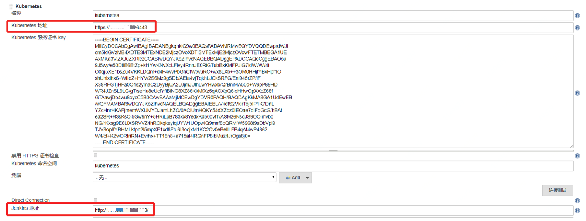
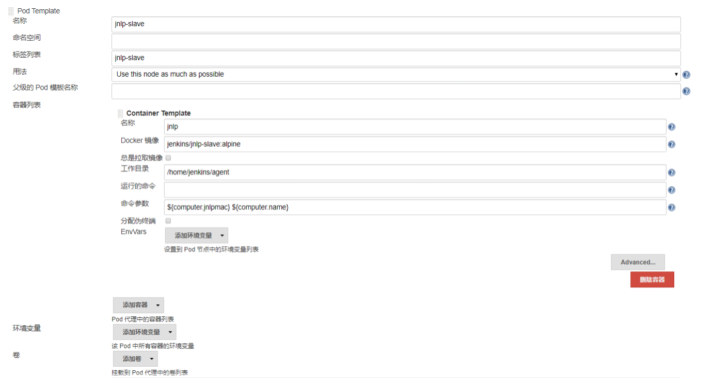

Kubernetes 集成 Jenkins
想要实现动态初始化环境，需要打通 Jenkins 和 Kubernetes。好在 Jenkins 已经提供了官方的Kubernetes 插件来完成这个功能。你可以在 Jenkins 系统配置中添加云 - Kubernetes，然后再参考下图进行配置。
需要注意的是，必须正确配置 Jenkins 的地址（系统配置 - Jenkins Location），否则会导致新建容器无法连接 Jenkins。

生成动态节点时，需要使用到 JNLP 协议，推荐使用 Jenkins 官方提供的镜像。
JNLP 协议的全称是 Java Network Launch Protocol，是一种通用的远程连接 Java 应用的协议方式。典型的使用场景就是在构建节点（也就是习惯上的 Slave 节点）上发起向 Master 节点的连接请求，将构建节点主动挂载到 Jenkins Master 上，供 Master 调度使用。**区别于使用 SSH 长连接的方式，这种动态连接的协议特别适合于 Kubernetes 这类的动态节点**。镜像配置如下图所示：

在配置动态节点的时候，有几个要点你需要特别关注下。
- 静态目录挂载。由于每次生成一个全新的容器环境，所以就需要将代码缓存（比如.git 目录）、依赖缓存（.m2, .gradle, .npm）以及外部工具等静态数据通过 volume 的方式挂载到容器中，以免每次重新下载时影响执行时间。
- 如果你的 Jenkins 也是在 Kubernetes 中运行的，注意**配置 Jenkins 的 JNLP 端口号**（使用环境变量：JENKINS_SLAVE_AGENT_PORT）。否则，在系统中配置的端口号是不会生效的。
- 由于每次初始化容器有一定的时间损耗，所以你可以**配置一个等待时长**。这样一来，在任务运行结束后，环境还会保存一段时间。如果这个时候有新任务运行，就可以直接复用已有的容器环境，而无需重新生成。
- 如果网络条件不好，可以适当地加大创建容器的超时时间，默认是 100 秒。如果在这个时间内无法完成容器创建，那么 Jenkins 就会自动杀掉创建过程并重新尝试。
如果一切顺利，动态 Kubernetes 环境就也可以使用了。这时，我们就可以完整地运行一条流水线了。在设计流水线的时候，你需要注意的是**流水线的分层**。具体的流水线步骤，我已经写在了系统架构图中。比如，提交阶段流水线需要完成拉取代码、编译打包、单元测试和代码质量分析四个步骤，对应的代码如下：
// pipeline 2.0 - Commit stage - front-end
pipeline {
agent {
// Kubernetes节点的标签
label 'pipeline-slave'
}
environment {
// 镜像仓库地址
HARBOR_HOST= '123.207.154.16'
IMAGE_NAME = "front-end"
REPO = 'front-end'
HOST_CODE_DIR = "/home/jenkins-slave/workspace/${JOB_NAME}"
GROUP = 'weaveworksdemos'
COMMIT = "${currentBuild.id}"
TAG = "${currentBuild.id}"
TEST_ENV_NAME = 'test'
STAGE_ENV_NAME = 'staging'
PROD_ENV_NAME = 'prod'
BUILD_USER = "${BUILD_USER_ID}"
// 需要挂载到容器中的静态数据
COMMON_VOLUME = ' -v /nfs/.m2:/root/.m2 -v /nfs/.sonar:/root/.sonar -v /nfs/.npm:/root/.npm '
}
stages {
stage('Checkout') {
steps {
git branch: 'xxx', credentialsId: '707ff66e-1bac-4918-9cb7-fb9c0c3a0946', url: 'http://1.1.1.1/shixuefeng/front-end.git'
}
}
stage('Prepare Test') {
steps {
sh '''
docker build -t ${IMAGE_NAME} -f test/Dockerfile .
docker run --rm -v ${HOST_CODE_DIR}:/usr/src/app ${IMAGE_NAME} /usr/local/bin/cnpm install
'''
}
}
stage('Code Quality') {
parallel {
stage('Unit Test') {
steps {
sh '''
docker run --rm -v ${HOST_CODE_DIR}:/usr/src/app ${IMAGE_NAME} /usr/local/bin/cnpm test
'''
}
}
stage('Static Scan') {
steps {
sh 'echo "sonar.exclusions=node_modules/**" >> sonar-project.properties'
script {
def scannerHome = tool 'SonarQubeScanner';
withSonarQubeEnv('DevOpsSonar') {
sh "${scannerHome}/bin/sonar-scanner"
updateGitlabCommitStatus name: 'build', state: 'success'
}
}
}
}
}
}
}
}